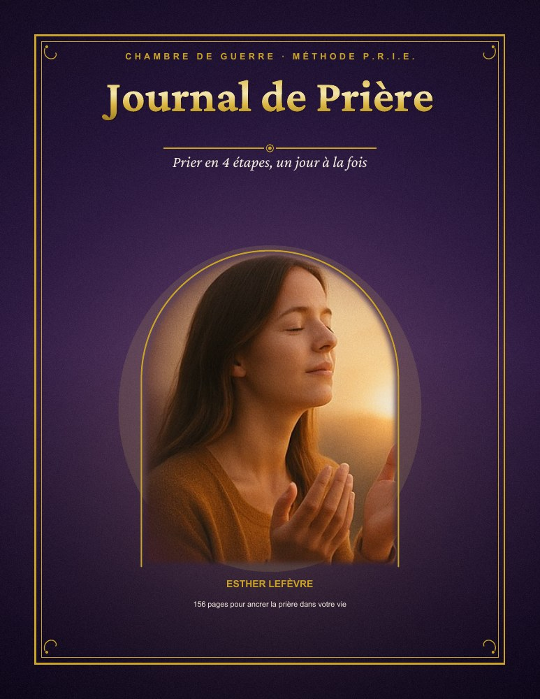

VOTRE ESPACE DE RECUEILLEMENT
Bienvenue dans votre bibliothèque.
UN MOMENT POUR VOUS, UN RENDEZ-VOUS AVEC DIEU
Votre chemin de prière
commence ici.
Un journal et trois compagnons pour lire, méditer et écrire à votre rythme. Installez-vous, ouvrez une page, prenez ce temps pour vous.
Votre progression est conservée sur cet appareil.

VOTRE JOURNAL · 156 PAGES▤4Livres à découvrir
✧3Cadeaux inclus
♡À votre rythmeUn moment chaque jour
VOTRE COLLECTION
Quatre livres. Un même élan.
MON PARCOURS
Chaque page compte.
0 %du journal parcouru
Votre première page vous attend.
Progression conservée sur cet appareil.
VOS COMPAGNONS DE PRIÈRE
Trois cadeaux pour avancer.
LE PETIT RITUEL
Quelques minutes, une page, une intention.
Choisissez un endroit calme. Lisez sans vous presser. Notez une pensée que vous souhaitez garder.